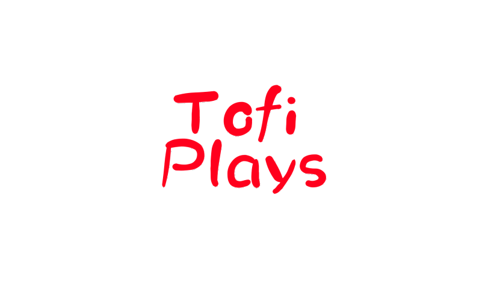

Home
Commands
Commands
The commands are texts that can be used in the game to experience things that are not for the public
Tofi Plays Commands
-;1gun : you get a weapon that is in beta
-;spm : a test subject appears
-;reboot : restart the game in case you get lost on the map or have problems
-;open rebort_beta_v1map : Spawns you on a map that is in beta (test)
-;open battle_wait_v1map : You enter the first version of the "lobby" of the game
-;set rebert_shop_v_1 : You unlock the beta phase poster shop (may contain bugs or errors)
new commands will come soon :)
By
Vorkix